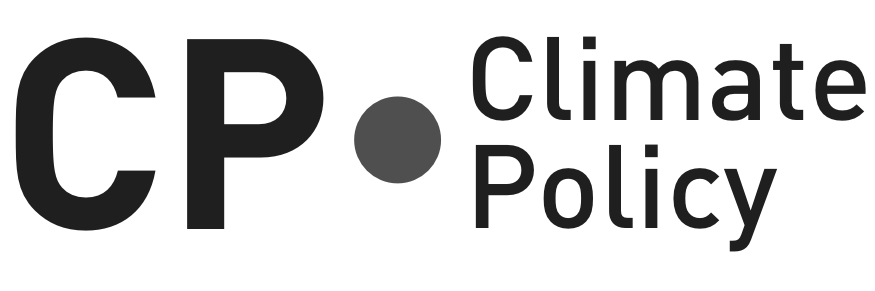
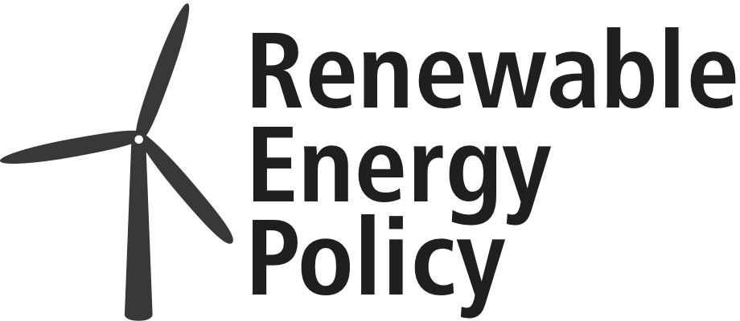

Open Energy Modelling Workshop
6-8 June 2018, ETH Zürich
Hosts
Climate Policy Group (Host and Main Sponsor)

Renewable Energy Policy Group (Host and Secondary Sponsor)

Programme
Participants
Miguel F. Astudillo

PhD student at the University of Sherbrooke (Canada). Working on the integration of energy system models and life cycle assessment
Sabine Auer

My name is Sabine and I recently finished my PhD at PIK in modeling power grid stability (especially frequency stability) with high penetration of renewable energy. Together with @timk (Tim Kittel) and @Chris (Christina Horn) in our research project elena and future startup elena international, we want to bring our research into application with Open-Source libraries (DPSA.jl) for frequency stability analysis. Based on this software and complementary Open-Source software we want to enable the... [read more on forum profile]
Sarah Berendes

I am an Engineer in Renewable Energy Systems and an Open Source enthusiast. I am working with the Off-Grid Team at RLI since March 2018. My modelling focus is directed to optimization / LP and MIPs of isolated island energy systems for system design and controller strategy identification. I also worked intensively with Oemof throughout the last year.
Tom Brown

I'm an energy system modeller at the Karlsruhe Institute of Technology (KIT). I'm interested in exploring models of the energy system with very low carbon dioxide emissions with free software. We've developed our own toolbox for doing this, [Python for Power System Analysis](https://github.com/PyPSA/PyPSA), which has a special focus on grid modelling. I'm also interested in open access publishing.
Wolf-Dieter Bunke

Gabriele Cassetti

My work consists in modelling energy systems at country level for future scenario development. I have experience in using LEAP, osemosys, EnergyPLAN and, more recently, oemof. I have experience in modelling microgrids with HOMER energy.
Soner Candas

Laurent Dubus

Ali Darudi

I am a PhD student at the Faculty of Business and Economics at the University of Basel, Switzerland. In addition, I am a researcher in Research Center for Sustainable Energy and Water Management (Forschungsstelle für Nachhaltige Energie-und Wasserversorgung, FoNEW) as well as the Competence Center for Research in Energy, Society and Transition (SCCER CREST). Fields of interest: Energy Economics, Game Theory, Electric Mobility, Renewable Energy Sources, Market Design
Ranjit Deshmukh

Ranjit is a postdoctoral researcher in the Energy Technologies Area at the Lawrence Berkeley Laboratory in Berkeley California. His research interests lie at the intersection of energy, climate change, and economics. His recent work includes renewable energy grid integration studies for India and Southern Africa. He also co-leads the development of the "Multi-criteria Analysis for Planning Renewable Energy" (MapRE) platform, an open-source data and tools platform for identifying and valuing... [read more on forum profile]
Srihari Dukkipati

I work on public interest energy policy analysis and advocacy. My current focus is on analytical approaches towards rational power sector planning and on investigating ways to improve energy data management in India. These aspects are particularly relevant I have some experience using proprietary power sector modeling tools, and am keen on switching to open source models, and contributing to their development where needed.
Paula Ferreira

Professor and Researcher School of Engineering, University of Minho. Research interests are in energy planning/modelling and multidisciplinary approaches for sustainability of energy systems, including economic, environmental and social dimensions.
Florian

PhD student working on the effect of recycling on renewable energy infrastructure development scenarios and embodied material/energy. Methods: physical input-output models, LCA, ecological network analysis, process control. Languages: R, Python.
Jared Garrison

Jared is a Postdoctoral Researcher at ETH Zurich at the Research Center for Energy Networks specializing in optimization for electric grid modeling and simulations for assessing the impacts of increased renewable energy and energy storage.
Stephan Günther

Heidi Ursula Heinrichs

Postdoc researcher with special interest in energy systems modeling challenges. I'm especially curious about finding the "best" level of detail and scenario setting to obtain robust solutions in energy systems assessment.
Leonhard Hofbauer

openmod newcomer having worked on models considering, among others, dynamics of socio-technical systems, integration of variable renewable energy and energy/transport sector planning in India (using OSeMOSYS).
Fabian Hofmann

Christina Horn

With the start-up elena international, Sabine (@Sabine_elena), Tim (@timk) and I want to push the energy transition by modelling renewable energies better so that the grid stays stable even with up to 100% of renewable energies. I studied industrial engineering and management at KIT and did internships and semesters abroad in Taiwan, China, India, France, Morocco and Tansania.
Daniel Huppmann

Jonas Hörsch

I’m an energy system modeller at the Karlsruhe Institute of Technology (KIT). My focus lies on the optimization of low-carbon energy systems. We have build a toolbox for this, Python for Power System Analysis (PyPSA), which has a special focus on grid modelling. I'm especially interested in the more technical aspects of software architecture for learning about future energy systems.
Ludwig Hülk

Researcher at the Reiner Lemoine Institute (RLI)
Bernhard-Johannes Jesse

Cord Kaldemeyer

I am an Interdisciplinary researcher in the field of energy system analysis. In current research projects I focus on heat and power sector coupling and technology assessment within renewable future energy systems from a technical, economical and environmental perspective. During the last years, I have been strongly involved in the development of the open-energy modelling framework (oemof).
Konstantinos Kavvadias

Alexander Kies

Aleksandra Kim

PhD student in the Paul Scherrer Institute
Tim Kittel

I just finished my PhD in modelling nonlinear systems and complex networks. Currently, I am preparing to found a company called "elena international" with Sabine Auer (@Sabine_elena) and Christina Horn (@chris) on modelling power grids. Here, we plan to offer energy mix optimization with grid integration including an additional dynamic stability analysis (frquency and voltage stability on second and subsecond scale).
Jann Launer

Arnaud Leroy

PhD student in Energy System Modelling. Topic: the role of spatial scale in energy system optimisations (PyPSA) Previously: European Master in Renewable Energy (Oldenburg, Zaragoza) Master Thesis: optimisation of the Alpine energy system (Calliope) - Eurac Research
Hailiang Liu

Hailiang Liu, a PhD Fellow at Aarhus University, Denmark, works on large scale renewable energy systems. He has been working on high resolution wind/solar/hydro power generation time series modelling and validation, cost-optimal electricity network design on continental scale and side projects such as future hourly electricity demand modelling. He programs with Python and used to dealing with large amount of data.
Francesco Lombardi

Doctoral researcher at Politecnico di MIlano - Department of Energy. Research focuses on modelling of multi-energy systems (MES) to generate rational decision options for a sustainable transformation of the local and global energy system.
Julien Marquant

Martin

Writing my PhD dissertation on agent-based modeling of electricity markets in the department of Systems Analysis and Technology Assessment at the German Aerospace Center (DLR). I try to understand the investment dynamics of renewable energy sources (RES), in particular decentralized sources like solar photovoltaics (PV), and how to shape and regulate energy markets with very high shares of RES. Special attention is paid to PV-battery systems and the techno-economic assessment of households... [read more on forum profile]
Cristian Monsalve

Robbie Morrison

I began energy modeling in 1995 and maintained [deeco](https://github.com/robbiemorrison/deeco) for seven years. deeco classes as the first open energy system model and was being publicly distributed by 2004 under a [GPL-2.0+](https://en.wikipedia.org/wiki/GNU_General_Public_License#Version_2) license via SSH [shell account](https://en.wikipedia.org/wiki/Shell_account). I later wrote xeona, a hybrid [agent-based](https://en.wikipedia.org/wiki/Agent-based_model) high-resolution energy... [read more on forum profile]
Chris Mutel

I am a scientist a the Paul Scherrer Institut, working on open data and code of sustainability assessment. I am the primary author of the [Brightway life cycle assessment framework](https://brightwaylca.org/) as well as other software ([bitbucket](https://bitbucket.org/cmutel/), [github](https://github.com/cmutel/)). My major focus now is in making life cycle assessment results much better by integrating open data, including energy production and consumption data.
Caroline Möller

Caroline Möller is researcher in the field of transformation of energy systems to 100% renewables at Reiner Lemoine Institut in Berlin. She focuses on the simulation of regional electricity and heat supply scenarios and the development of relevant modeling frameworks. She is part of the developer and user community of oemof (open energy modeling framework). Since end of 2013 she investigates the integration of storage in so-called energy regions in her Ph.D. project. This is part of the project... [read more on forum profile]
Lukas Nacken

I am a new researcher in the energy system optimization field. In my thesis, I develop and utilize a simple and comprehensible ESOM tool to analyze the parameter and decision space by performing sensitivity and deep uncertainty analysis as well as robust decision-making. The results will reveal the most important parameters, the room for strategic decisions and robust policy decision support.
Bharadwaj Venkatesh Narasimhan

Research Engineer with Energynautics GmbH. Have worked with many topics. - Dynamic Stability - Distribution System Studies - Battery system optimization more recently
Arjuna Nebel

I'm a research fellow at the Wuppertal Institute, doing interdisciplinary research at the division Future Energy and Mobility Structures. Modelling of energy markets and energy infrastructures are my main research focus.
Fabian Neumann

- PhD student in energy system modelling and informatics at KIT focussing on methodologies to improve network representations in energy system optimisations - Former research associate at Fraunhofer ISI in energy economics focussing on import options of synthetic fuels for use in the transport sector and future roles of gas networks - MSc in Sustainable Energy Systems from University of Edinburgh focussing on electric vehicle charging coordination in distribution networks under uncertainty -... [read more on forum profile]
Matija Pavičević

Research Assistant at University of Zagreb, Faculty of Mechanical Engineering and Naval Architecture Representative of SDEWES centre
Stefan Pfenninger

I am an interdisciplinary researcher in renewable energy and environmental science. My current research focus is the global transition to a 100% clean and renewable energy system, and the technical, economic and policy barriers on the way to that goal. I created and lead development of the open-source energy system modelling tool Calliope. I am also the creator and lead developer of the Renewables.ninja platform to simulate wind and solar power plants worldwide.
Bryn Pickering

PhD candidate in Civil Engineering & co-developer of Calliope, one of the many energy system optimisation models out there! My current research focuses on the use of stochastic demand data to inform robust optimisation, for better design of district energy systems. When not staring into the hellish abyss of an open-source energy model, you can find me at my allotment, on the street trying to reach 1000km run in 2018, or wishing I drank beer when asking once again, unsuccessfully, for a cider in a random European bar.
Ashreeta Prasanna

I work on distributed multi-energy systems (heat and electricity), coupled with energy efficiency measures, to enable districts and cities to meet their sustainability goals. My work also involves identification of new business opportunities for local renewable energy systems and storage.
Sylvain Quoilin

I am an assistant professor at the KU Leuven (Belgium) and at the University of Liège. I conduct research in the field of Smart Energy Systems, mainly focused on the transition towards clean and renewable energy production. In the course of my work I created and lead development of various open-source modelling tools, such as ThermoCycle, Dispa-SET or GPExp.
Martin Robinius

Severin Ryberg

Konrad Schönleber

Smail

Tiziano

I'm a research associate in the EnergySpaceTime group at the University College London (UCL). I'm currently building a multi-vector energy system model at the European scale within the RESTLESS project. My background includes Computer engineering and Bioinformatics.
Tim Tröndle

I am a PhD student in the interdisciplinary Renewable Energy Policy group at ETH Zürich. With my background in system science I am analysing future designs of renewable energy systems but also ways of reaching them. In my previous job as a software developer I got to know the power and efficiency of collaborative and open methods -- but also how much more fun they are.
Laurent Vandepaer

I am working on the integration of life cycle assessments (LCA) and energy system modeling tools. This work has two key aspects: (1) I use the results coming from energy models/energy scenarios into LCA to realize forward-looking environmental assessments, (2) I integrate results from LCA in energy models to calculate the life cycle impacts of future energy systems.
Marta Victoria

Manuel Wetzel

PhD student at the German Aerospace Center (DLR). Research focus on transformation paths towards low-carbon energy systems, stochastic optimization and application of parallel solvers and decoposition methods.
Frauke Wiese

Clemens Wingenbach

I am working at the Center for Sustainable Energy Systems at the Europa-Universität Flensburg in the field of (open) energy system modelling and analysis. Currently I am enrolled for a Master Programme in Applied Computer Science at the FernUniversität in Hagen.
Christian Winzer

Lecturer at the Zürich University of Applied Sciences (ZHAW).
Berit.Mueller

Head of the research field Transformation of Energy Systems at the Reiner Lemoine Institute. Special interest beyond system analyses are renewable heat supply and biomass use as well as "black-start" capability of "electric cells". My focus in the open world are features to improve reproducibility.
Ingmar.Schlecht

I'm an energy econoomist specializing on the electricity market and the modelling thereof. From this year on, besides my post-doc position at University of Basel I started half-time at Neon Neue Energieökonomik doing policy consulting in energy economics. During my PhD at Basel I developed a nodal-pricing electricity dispatch model with focus on hydropower called Swissmod. I graduated in economics from Uni Marburg (B.Sc.) and University of Kent (M.Sc. economics). I'm an open source enthusiast,... [read more on forum profile]